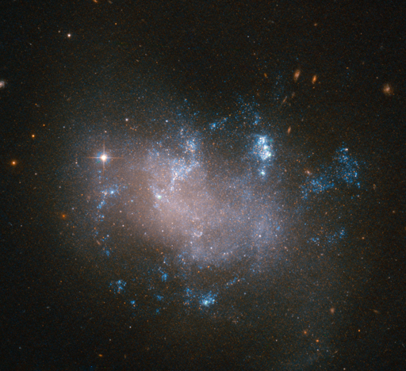
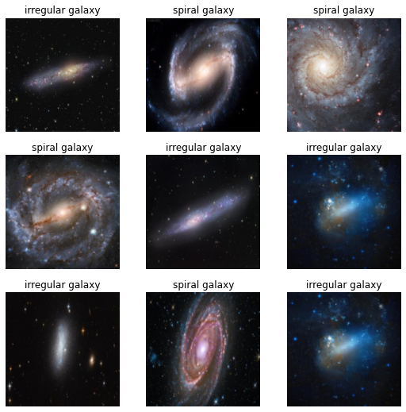
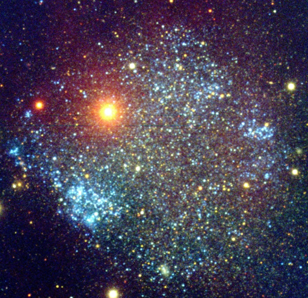

from duckduckgo_search import ddg_images
from fastdownload import download_url
from fastcore.all import *
from fastai.vision.all import *1 Introduction
In this series of articles I will be re-visiting the FastAI Practical Deep Learning for Coders for this year 2022 which I have completed in previous years.
This article covers lesson 1 of this years course, which I will use to create model that can identify different types of galaxies. I will also highlight some notable differences from earlier versions of the fastai course and library.
First we will import the required libraries.
2 Import Libraries
The first notable difference from earlier versions of fastai is that its now much easier to download images from a search engine to create a dataset from, by default this uses the search engine duck duck go. Lets define a short function that will gather images for us.
def search_images(term, max_images=30):
print(f"Searching for '{term}'")
return L(ddg_images(term, max_results=max_images)).itemgot('image')3 The Project: Recognise Spiral vs Irregular Galaxies
Two of the main types of galaxies are spiral and irregular galaxies. Lets use our previous function to first download some examples of spiral galaxy images to see what they look like.
urls = search_images('spiral galaxy photos')Let’s now grab one of these images and have a look.
dest = 'spiral_galaxy.jpg'
download_url(urls[2], dest, show_progress=False)
im = Image.open(dest)
im.to_thumb(512,512)So we can see spiral galaxies have a spiral structure to them, they are relatively flat and have distinctive arms, with a bulge concerntrated at the center.
Let’s now download some irregular galaxies and have a look at one.
download_url(search_images('irregular galaxy photos')[3], 'irregular_galaxy.jpg', show_progress=False)
Image.open('irregular_galaxy.jpg').to_thumb(512,512)Searching for 'irregular galaxy photos'
Irregular galaxies have no obvious structure, and are not flat like spiral galaxies. These are often some of the oldest galaxies in the universe, which were abundant in the early universe before spirals and other types of galaxies developed.
4 Download Galaxy Images
So it looks like our images correspond to the types of galaxy images we want, so we will now grab some examples of each to create our dataset.
searches = 'spiral galaxy','irregular galaxy'
path = Path('spiral_or_irregular')
from time import sleep
for o in searches:
dest = (path/o)
dest.mkdir(exist_ok=True, parents=True)
download_images(dest, urls=search_images(f'{o} photo'))
sleep(10) # Pause between searches to avoid over-loading server
resize_images(path/o, max_size=400, dest=path/o)Searching for 'spiral galaxy photo'
Searching for 'irregular galaxy photo'Another nice new fastai feature is the ability to check the images we have download have valid paths and delete any that are not valid images.
failed = verify_images(get_image_files(path))
failed.map(Path.unlink)
len(failed)05 Create Dataset
We will now create a DataLoader object using the DataBlock object. This is very much the way it was done in fastai the last time i did this course.
dls = DataBlock(
blocks=(ImageBlock, CategoryBlock),
get_items=get_image_files,
splitter=RandomSplitter(valid_pct=0.2, seed=42),
get_y=parent_label,
item_tfms=[Resize(192, method='squish')]
).dataloaders(path, bs=32)
dls.show_batch(max_n=9)
We can see we have some nice examples of each type of galaxy.
6 Train Model
Now we have our data ready we can create our vision model and train it. We will train a ResNet18 model for just 3 epochs (or 3 complete passes over the entire dataset).
learn = vision_learner(dls, resnet18, metrics=error_rate)
learn.fine_tune(3)| epoch | train_loss | valid_loss | error_rate | time |
|---|---|---|---|---|
| 0 | 1.071076 | 0.766020 | 0.391304 | 00:00 |
| epoch | train_loss | valid_loss | error_rate | time |
|---|---|---|---|---|
| 0 | 0.594808 | 0.279009 | 0.173913 | 00:00 |
| 1 | 0.417826 | 0.361526 | 0.086957 | 00:00 |
| 2 | 0.303060 | 0.362775 | 0.086957 | 00:00 |
7 Test Model
We will now test our model by picking an example image for each type of galaxy and see how well it can predict which type of galaxy it is.
dest = 'spiral_galaxy2.jpg'
download_url(urls[3], dest, show_progress=False)
im = Image.open(dest)
im.to_thumb(512,512)is_spiral_galaxy,_,probs = learn.predict(PILImage.create('spiral_galaxy2.jpg'))
print(f"This is a: {is_spiral_galaxy}.")
print(f"Probability it's a spiral galaxy: {probs[1]:.4f}")This is a: spiral galaxy.
Probability it's a spiral galaxy: 0.9313download_url(search_images('irregular galaxy photos')[6], 'irregular_galaxy2.jpg', show_progress=False)
Image.open('irregular_galaxy2.jpg').to_thumb(512,512)Searching for 'irregular galaxy photos'
is_irregular_galaxy,_,probs = learn.predict(PILImage.create('irregular_galaxy2.jpg'))
print(f"This is a: {is_irregular_galaxy}.")
print(f"Probability it's a irregular galaxy: {probs[0]:.4f}")This is a: irregular galaxy.
Probability it's a irregular galaxy: 0.8309After training the model for just 3 epochs the model has achieved an excellent accuracy, probably if it had trained for a few more epochs it would have had near perfect accuracy in correctly distingushing these 2 different types of galaxy.
8 Conclusion
It’s worth stepping back for a moment just to appreciate how incredible this achievement is - with just a few lines of code, we have trained a model with around 31 million artifical neurons to recognise a galaxy with around 100 billion stars in a matter of a few seconds.
The fastai library just becomes easier and easier to use over time with continual improvements, automatically using the best methods and practices in deep learning in an easy to use library.
Lesson 2 of 2022 coming up !